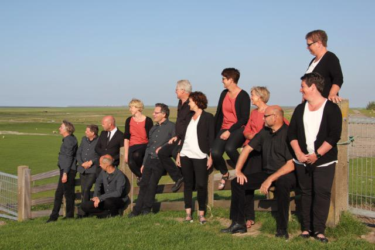

Close harmony en a capella van Vocal Group STIM - 23 oktober 2016
Datum |
Zondag 23 oktober 2016, aanvang 15:00 uur |
Toegang |
€ 10.00 (incl.1 consumptie) € 7.50 (freon van de Doarpstsjerke) |
Van gevoelige ballad tot stevige swing (en dat al 10 jaar)
Vocal Group STIM is een ambitieuze groep van twaalf ervaren zangers en zangeressen uit Friesland, die na vele jaren in de klassieke muziek en de lichte koormuziek elkaar in 2006 vonden in het close harmony en a capella genre. Dat betekent dat 2016 een jubileumjaar is! Het repertoire bestaat uit vocale, meerstemmige arrangementen van bekende en minder bekende liedjes uit de schatkamer van de lichte en klassieke muziek. Van gevoelige ballad tot stevige swing. In 2015 bracht STIM de muzikale theatervoorstelling 'It lûd fan’e wjukslach' van Theo Smedes. Met 'de Wjuk' werd een avontuurlijke reis door de provincie gemaakt: in zes maanden tien voorstellingen.
Dirigent en creatief leider is Titus Steegstra. “In onze programma's nemen we mensen mee op reis door een gevarieerd muzikaal landschap”, zegt hij. “Aan boord van onze vocale trein ontmoet je de meest uiteenlopende 'passagiers': van Coldplay, Steely Dan en James Taylor tot en met Bobby McFerrin, The Real Group, Brigitte Kaandorp en The Beatles. Wij willen mensen laten genieten (maar ook: zelf genieten!) van een machtig mooi genre binnen de koormuziek.”
Op 23 oktober komt de Vocal Group STIM een concert geven in Mienskipshûs Doarpstsjerke Metslawier.